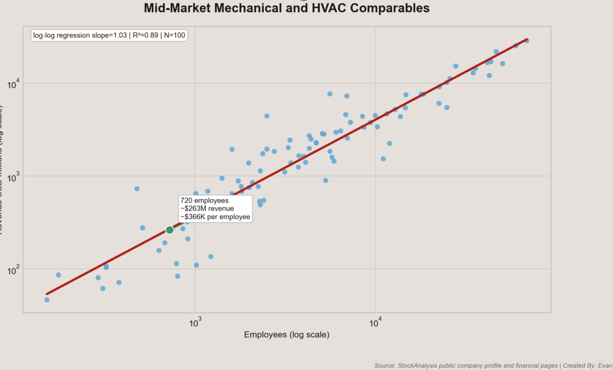
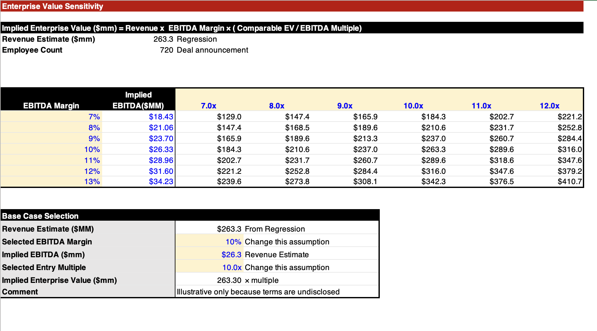
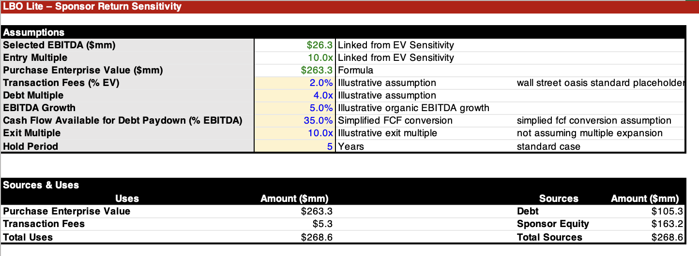
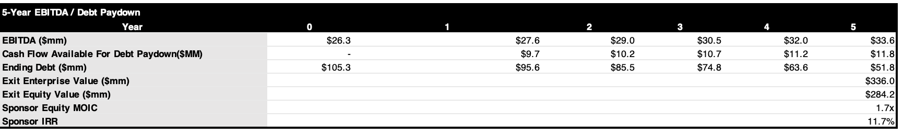
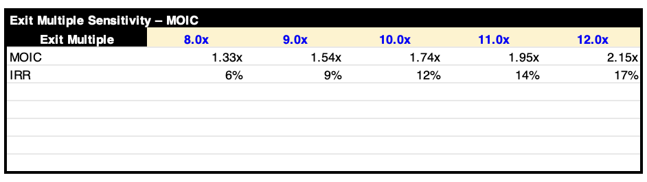

What Returns Could Truelink Earn on Horwitz?
Truelink Capital acquiring Horwitz teaches us about synergy, LBOs, and the current PE environment.
On June 16th of this year, private equity firm Truelink Capital invested in mechanical, electrical, and plumbing services provider Horwitz. Horwitz provides MEP services across the twin cities, especially in high-growth markets like data centers, medtech, and advanced manufacturing.
Despite the financials of the deal not being disclosed, I'm testing whether Horwitz deserves to be scaled like a scalable commercial services platform rather than a regional platform. I intend to learn how William Blair could defend that positioning in a sell-side process. The question is as follows: what would have to be true in order to defend Horwitz as a scalable regional platform, and have it hit that higher valuation bucket?
In order to do this, I will be building an EV/EBITDA sensitivity model and a simplified LBO model. The LBO case assumes that Horwitz grows organically in order to determine whether organic growth can create a high enough IRR for Truelink Capital. Because Horwitz does not disclose revenue, I estimated revenue using a peer set of MEP / specialty contractors with known revenue and employee counts, then applied the implied revenue-per-employee range to Horwitz’s ~720 employees.
The first step of this process is finding the revenue. Unfortunately, company revenue was not disclosed, however employee count was. Scraping information from the internet, I was able to gather just over 100 datapoints of companies revenue/employee counts. Below is a regression of the 100 companies across a scatterplot. On the X axis is the number of employees per company. On the Y axis is the revenue per company. Plotting a regression across data points allows us to estimate Horwitz’ revenue; at 720 employees, Horwitz should have around $263M in revenue.

Now that we have revenue, the model can be constructed. Because EBITDA valuations are more standard than revenue, I built out an EBITDA sensitivity enterprise value sensitivity model for varying EBITDA multiples and EBITDA margins. Based on public comps and referencing PrivCo companies (I would use PrivCo for data but I only have a limited amount of company views), an EBITDA margin of 7-13% seems plausible for a regional MEP services platform, with base case being around 9-11%.

Next, I built out an LBO model for this transaction. 2.0% is a standard transaction fee; I use 2.0% as a standard percent for all of my models. A debt multiple of 4x is reasonable via Q1 2026 lower-middle-market data. EBITDA growth of 5% is another reasonable assumption, reflecting its recurring service base, exposure to high-growth markets, and potential operating improvements under Truelink. I also referenced comparables to come up with this figure. Cash flow available for debt paydown is modeled as 35% of EBITDA, reflecting a simplified levered FCF conversion assumption. Finally, a base case exit multiple of 10x is used, as returns will be factored without valuation uplifts. However, multiple expansion could occur given Truelink’s strategy of building Horwitz into a larger, diversified MEP platform through primarily M&A in a fragmented regional market.

Model Conclusion: please keep in mind that I made many assumptions due to financials not being disclosed. Horwitz can be defended as a scalable regional MEP platform, but the LBO suggests Truelink likely needs more than just organic growth to earn a strong sponsor return. At a 10.0x entry / 10.0x exit, 5.0% EBITDA growth, and 35% cash conversion, the model produces about an 11.7% IRR. The real sponsor thesis then is likely regional consolidation, mix shift, margin expansion, and eventual multiple expansion.


This checks out with the official press release, as Truelink Capital makes note of their operation within a “large and fragmented regional MEP services market with strong demand”. Strategic rationale is important here, and the upside case banks on Truelink using Horwitz as a regional consolidation platform instead of just growing it organically. Without M&A, margin improvement, or multiple expansion, the base-case return is pretty modest. However, if margins are closer to 10% and the fragmented market can create add-on acquisition runaway, then Horwitz can certainly be defended as a scalable commercial services platform rather than a traditional regional contractor.